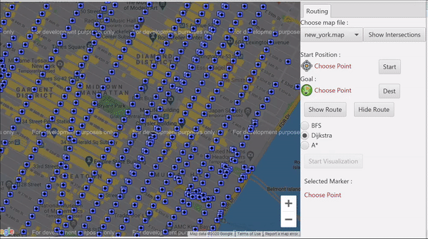
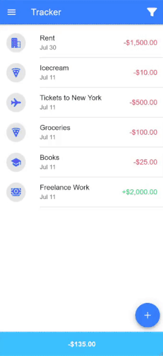
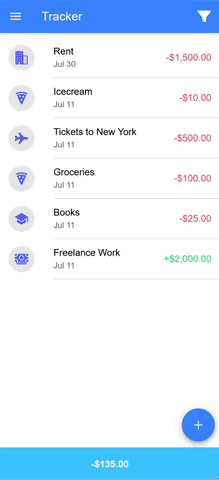

Route Planning and Navigation System

A route planning system that takes a start and
end point and outputs the most efficient route.
Created with: Java, Eclipse, Google Maps API
Spotify Recommendation System


A musical recommender system that takes in
a user's favorite artists, and outputs similar artists.
Created with: Java, Eclipse, Graphstream API
AccountAbility


A communal fact-checking app where users are dedicated to challenging
claims with verified sources.
Created with: HTML, CSS, Typescript, NodeJS, Ionic, Angular
Finance Tracker


An app that allows you to track and organize your expenses and income.
Created with: HTML, CSS, Typescript, NodeJS, Ionic, Angular